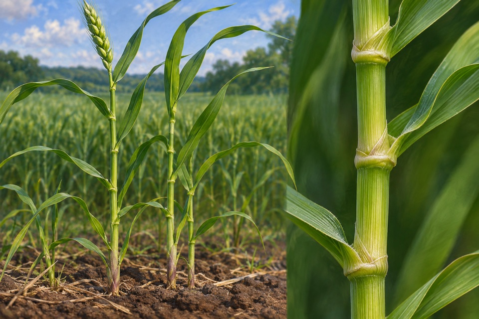
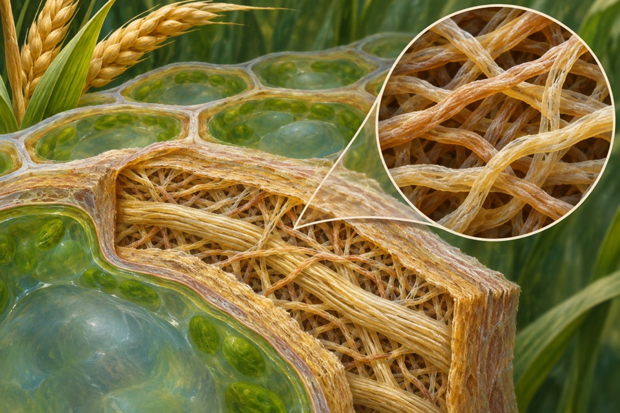
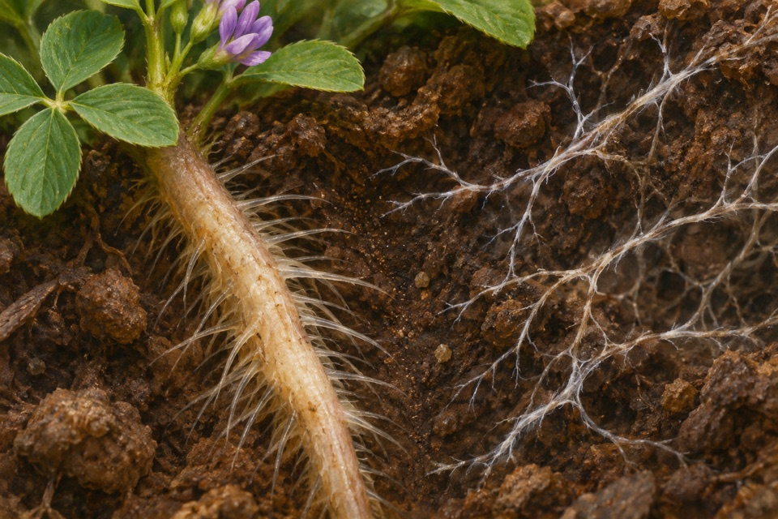
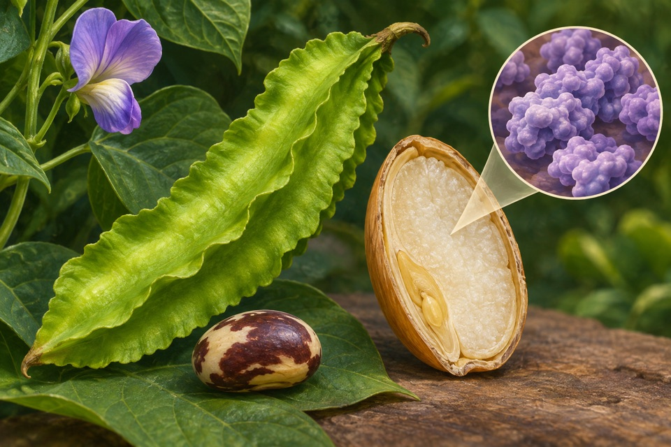

Module 01
Reduced stem extension through altered gibberellin response
Measure stem or internode extension and the growth response to gibberellin independently from yield.
Evidence recordOpen any of the ten modules to see the reported observation, its sources, and the research questions still open.

Measure stem or internode extension and the growth response to gibberellin independently from yield.
Evidence record
Measure β-D-glucose oxidation with a characterized enzyme preparation.
Evidence record
Detect wall polymer containing both β-(1→3) and β-(1→4) linkages.
Evidence record
Measure ballooning attempts or vertical movement with the field on and off.
Evidence record
Measure root growth or branching after perception of fungal lipochitooligosaccharides and separate this early response from nutrient exchange.
Evidence record
Measure L-sorbose and competing products from D-sorbitol.
Evidence record
Measure seed lysine on a defined composition basis and separate it from total protein.
Evidence record
Measure the relation between tissue position, density and mechanical response.
Evidence record
Track the start of fruit ripening separately from fruit set, individual quality traits or leaf senescence.
Evidence record
Measure reversible CO₂ hydration activity and retained activity after a stability challenge.
Evidence record